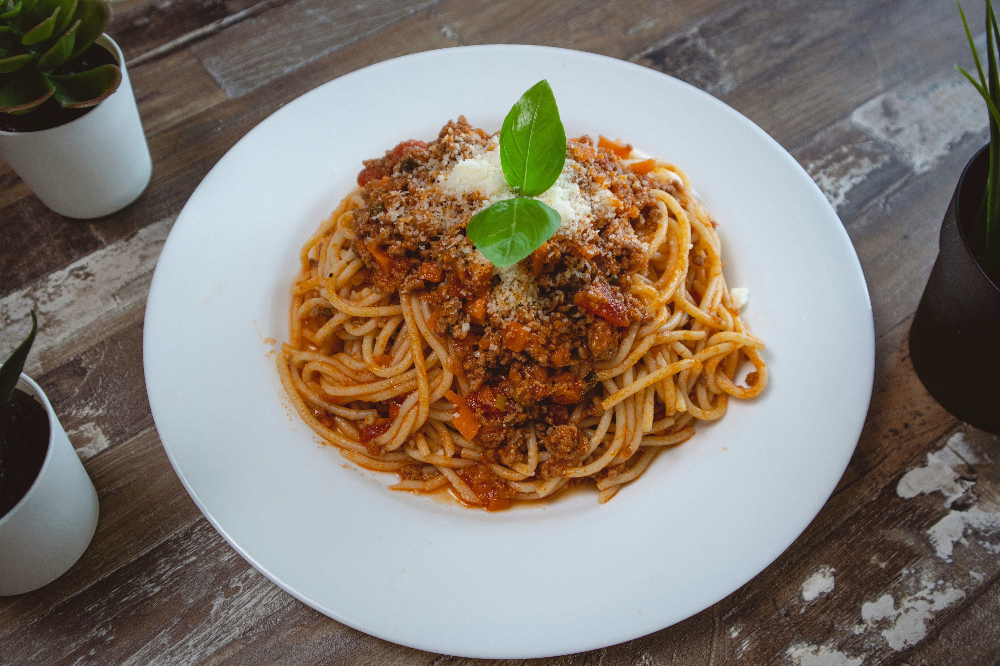

Spaghetti Bolognese

How to make the most delicious homemade spaghetti bolognese ever!!
Spaghetti bolognese is a quintessential Italian dish
that should be in your repertoire of recipes. This version is not the quickest or easiest,
but might be the tastiest one you can find on the internet! Below you will find all the ingredients
you will need to make this delicious meal. Be sure to make extra to share with friends and family.
Ingredients:
- Onion
- Carrot
- Celery
- Tomato Paste
- Canned Tomatoes
- Ground beef
- Garlic
Steps:
- Chop your mirepoix finely
- Heat up a large dutch oven on medium heat
- Add olive oil to the dutch oven
- Once the oil is hot, add your mirepoix, and sautee until fragrant
- Add your garlic and sautee for antoher minute
- Add the tomato paste and let it brown for about a minute, making sure not to burn the fond in the pot
- Bla bla bla
Home